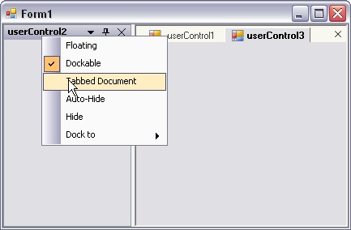

Normally tabbed-MDI is used in MDI applications where the child forms are the children that get tabbed. But, we could also use tabbed-MDI with UserControls as children and that are also dockable. The sample attached here shows how the UserControls can be used as tabbed-MDI children in association with the DockingManager.
 Note: Set the IsMdiContainer property of
the form to true. Otherwise this will not work.
Note: Set the IsMdiContainer property of
the form to true. Otherwise this will not work.
|
[C#]
this.tabbedMDIManager = new TabbedMDIManager(); this.tabbedMDIManager.AttachToMdiContainer(this);
// Dock the User Controls this.dockingManager1.SetEnableDocking(this.userControl1, true); this.dockingManager1.SetEnableDocking(this.userControl2, true); this.dockingManager1.SetEnableDocking(this.userControl3, true);
// Set the user controls to MDI mode this.dockingManager1.SetAsMDIChild(this.userControl11,true); this.dockingManager1.SetAsMDIChild(this.userControl21,true); this.dockingManager1.SetAsMDIChild(this.userControl31,true); |
|
[VB.NET]
Me.tabbedMDIManager = New TabbedMDIManager() Me.tabbedMDIManager.AttachToMdiContainer(Me)
' Dock the User Controls Me.dockingManager1.SetEnableDocking(Me.userControl1, True); Me.dockingManager1.SetEnableDocking(Me.userControl2, True); Me.dockingManager1.SetEnableDocking(Me.userControl3, True);
' Set the user controls to MDI mode Me.dockingManager1.SetAsMDIChild(Me.userControl11,True) Me.dockingManager1.SetAsMDIChild(Me.userControl21,True) Me.dockingManager1.SetAsMDIChild(Me.userControl31,True) |

Figure 105: UserControls used as TabbedMDIManager's Children by using the Docking Manager
See Also